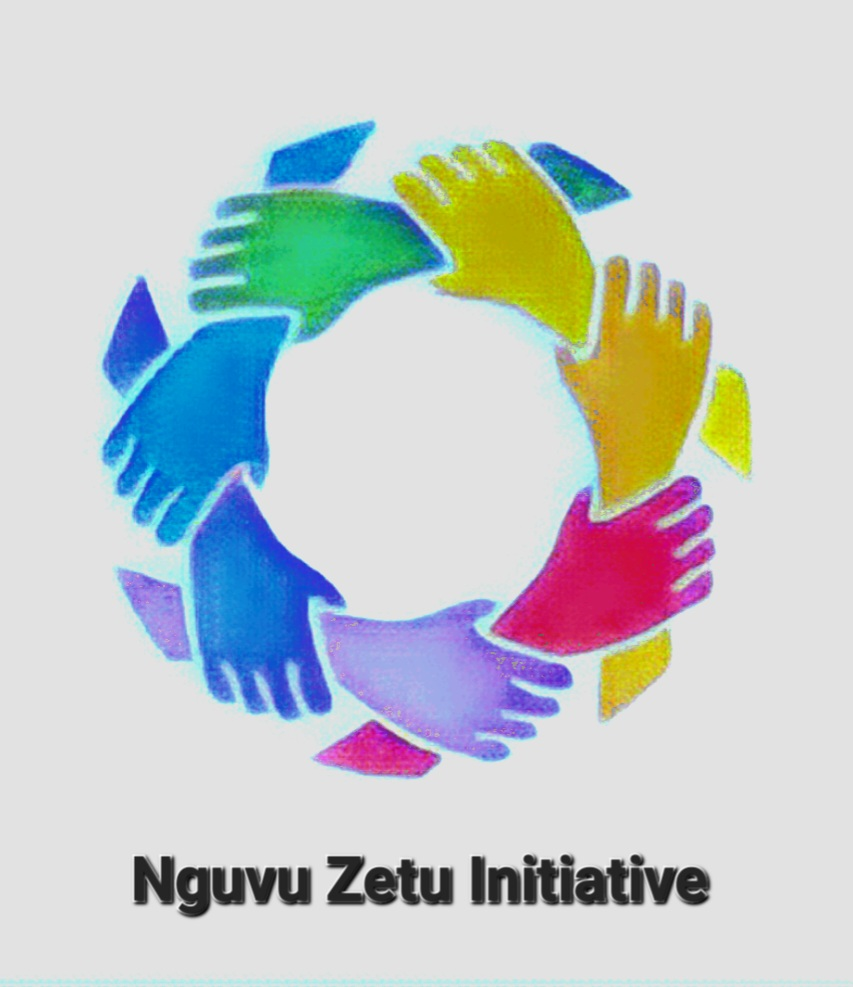
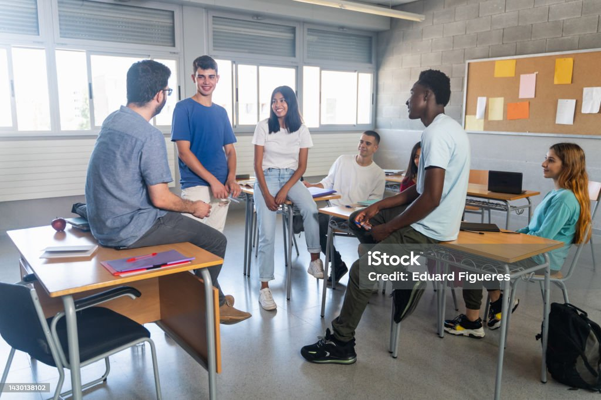

NGUVU ZETU INITIATIVE
Empowering minds,building connections
images

Our Services
- Mindset Training Workshops: Conduct workshops and seminars to help individuals develop a growth mindset, resilience, and a positive attitude
- Personal Development Coaching: Provide one-on-one coaching sessions to guide individuals in improving their mindset and achieving personal growth.
- Online Courses: Offer self-paced online courses on topics like self-confidence, goal setting, and emotional intelligence.
- Community Building: Create a supportive community or forum where like-minded individuals can connect, share experiences, and support each other.
- Networking Events: Organize events, both online and in person, for people to meet and network with others who share similar goals and interests.
- Peer Support Groups: Facilitate small peer support groups where individuals can discuss challenges, set goals, and hold each other accountable
- Assessment Tools: Offer personality and mindset assessment tools to help individuals better understand themselves and their growth areas.